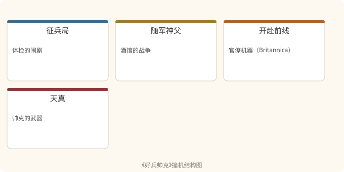

好兵帅克
一、基本信息
| 作者 | 雅罗斯拉夫·哈谢克 |
|---|---|
| 成书/出版 | 1921—1923年出版（Britannica：published 1921–23） Jaroslav Hasek — Encyclopaedia Britannica（百科全书） |
| 国别/地区 | 捷克 |
| 时代 | 现当代 · 20世纪（一战后） |
| 体裁 | 讽刺小说 |
| 语言 | 捷克语 |

《好兵帅克》撞机结构图（主题·结构图）
二、创作背景
Britannica：'The Good Soldier Schweik reflects the pacifist, antimilitary sentiments of post-World War I Europe'（反映一战后欧洲的反战与反军国情绪——B243）。
帅克'invariably incompetent, and guileless, is forever colliding with the clumsy, dehumanized military bureaucracy'——其天真'is the main vehicle for Hašek's mockery of authority'（B243）。
未完成：原计划六卷、仅成三卷，第四卷由卡雷尔·瓦内克续成（B243）。
三、内容脉络
帅克以'白痴式忠诚'应征入伍：征兵局、随军神父、火车、前线（通说）。
每一步都与笨拙而无人性的军事官僚机构相撞（Britannica：forever colliding with……）。
四、主要人物表
| 人物 | 身份 | 说明 |
|---|---|---|
| 帅克 | 好兵 | 天真反讽的主角（B243） |
| 杜布中尉 | 军官 | 官僚机器的代表（通说待核） |
五、主题与艺术特点
- 反战与反军国主义（Britannica：pacifist, antimilitary sentiments）。
- 以天真瓦解权威（Britannica：mockery of authority）。
- 奥匈帝国官僚的荒诞（Britannica：clumsy, dehumanized military bureaucracy）。
六、影响与评论
- Britannica：一战后欧洲反战文学的代表作之一（语境）。
Jaroslav Hasek — Encyclopaedia Britannica（百科全书） - '帅克式'人物成为捷克民族性格的漫画符号（通说待核）。
Jaroslav Hasek — Encyclopaedia Britannica（百科全书）
七、阅读建议
难点
- 奥匈军制与捷克语双关。
- 未完成结构——阅读时注意续稿。
- 萧乾译本（人民文学出版社，通说待核）。
- 捷克原版插图（拉达画本——通说待核）。
对照《动物农场》《五号屠场》：反战的两种笑法。
八、待核实
- 人物名（杜布/卡茨）核对。
- 哈谢克的无政府主义经历待核。
- 六卷计划细节核对。
本页主要来源
雅罗斯拉夫·哈谢克的其他收录作品：好兵帅克